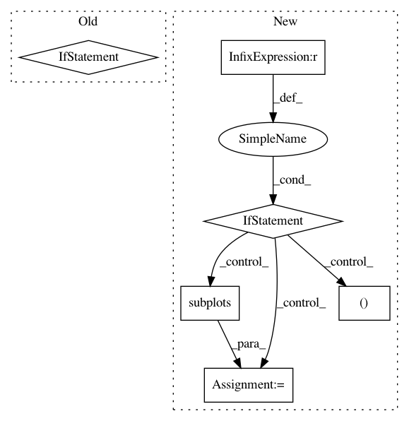

a802d31210ed262b8159b656b256bdacf10c9d61,bindsnet/analysis/plotting.py,,plot_performance,#Any#Any#Any#Any#,398
Before Change
for scheme in performances:
ax.plot(
[n * x_scale for n in range(len(performances[scheme]))],
[p for p in performances[scheme]],
label=scheme,
)
After Change
:return: Used for re-drawing the performance plot.
if save is not None:
plt.ioff()
_, ax = plt.subplots(figsize=figsize)
for scheme in performances:
ax.plot(
range(len(performances[scheme])),
[p for p in performances[scheme]],
label=scheme,
)
ax.set_ylim([0, 100])
ax.set_title("Estimated classification accuracy")
ax.set_xlabel("No. of examples")
ax.set_ylabel("Accuracy")
ax.set_xticks(())
ax.set_yticks(range(0, 110, 10))
ax.legend()
plt.savefig(save, bbox_inches="tight")
plt.close()
plt.ion()
else:
if not ax:
_, ax = plt.subplots(figsize=figsize)
else:
ax.clear()
for scheme in performances:
ax.plot(
range(len(performances[scheme])),
[p for p in performances[scheme]],
label=scheme,
)
ax.set_ylim([0, 100])
ax.set_title("Estimated classification accuracy")
ax.set_xlabel("No. of examples")
ax.set_ylabel("Accuracy")
ax.set_xticks(())
ax.set_yticks(range(0, 110, 10))
ax.legend()
return ax
def plot_voltages(
In pattern: SUPERPATTERN
Frequency: 3
Non-data size: 6
Instances
Project Name: BindsNET/bindsnet
Commit Name: a802d31210ed262b8159b656b256bdacf10c9d61
Time: 2020-05-11
Author: hananel@hazan.org.il
File Name: bindsnet/analysis/plotting.py
Class Name:
Method Name: plot_performance
Project Name: nilmtk/nilmtk
Commit Name: 0ac7cecce4f147011037fcb79dfd57867b8329a8
Time: 2014-12-19
Author: jack-list@xlk.org.uk
File Name: nilmtk/metergroup.py
Class Name: MeterGroup
Method Name: plot_good_sections
Project Name: kundajelab/dragonn
Commit Name: 38512d92a8682a62e73c5b9e86366888be374532
Time: 2019-05-29
Author: annashcherbina@gmail.com
File Name: dragonn/vis/__init__.py
Class Name:
Method Name: plot_motif_scores